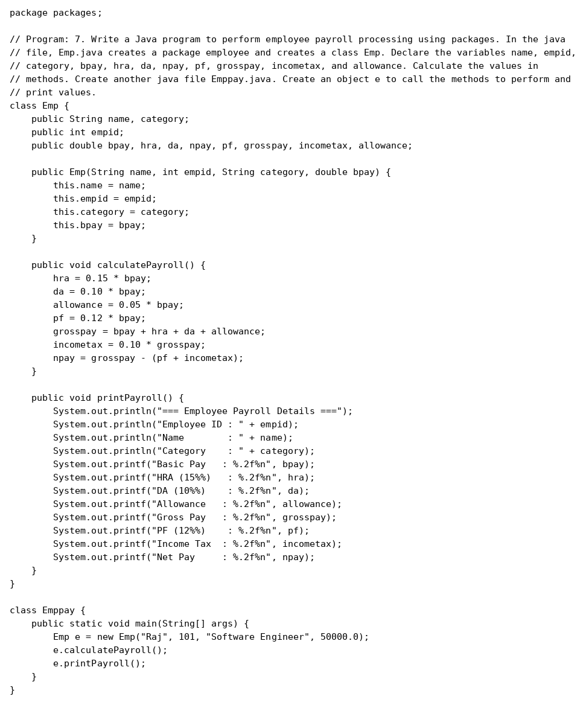
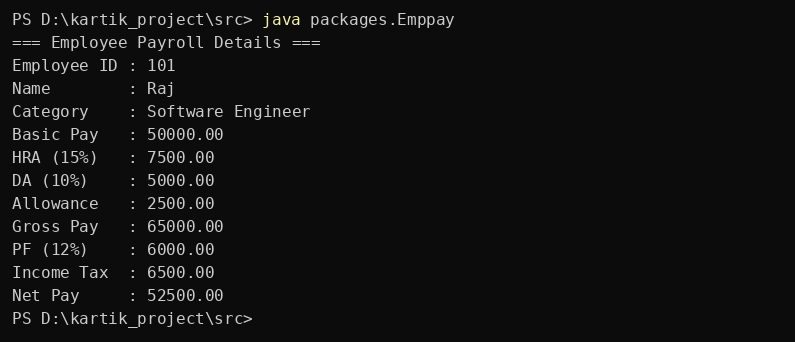

Question 7
Write a Java program to perform employee payroll processing using packages. In the java file, Emp.java creates a package employee and creates a class Emp. Declare the variables name,empid, category, bpay, hra, da, npay, pf, grosspay, incometax, and allowance. Calculate the values in methods. Create another java file Emppay.java. Create an object e to call the methods to perform and print values.
Program


Program screenshot not found. Keep the program folder next to this website folder.
Output


Output screenshot not found. Keep the output folder next to this website folder.